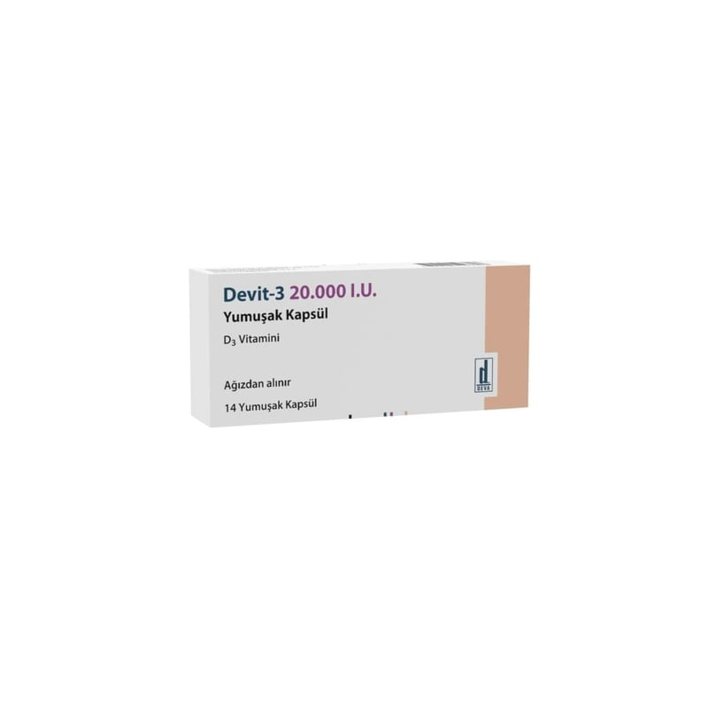

Devit-3 20.000 I.U. Yumuşak Kapsül, 14 Adet

Ne için kullanılır
KT · Bölüm 1DEVİT-3 aktif madde olan kolekalsiferol (koyun yünü yağından elde edilen) içermektedir (Kolekalsiferol, D3 vitamini olarak da bilinir). D vitamini eksikliği tedavisinde, idamesinde ve profilaksisinde (önlenmesi) kullanılır.
DEVİT-3, bikonveks, oval, şeffaf, turuncu renkli yumuşak kapsül şeklinde, karton kutularda kullanıma sunulmaktadır.